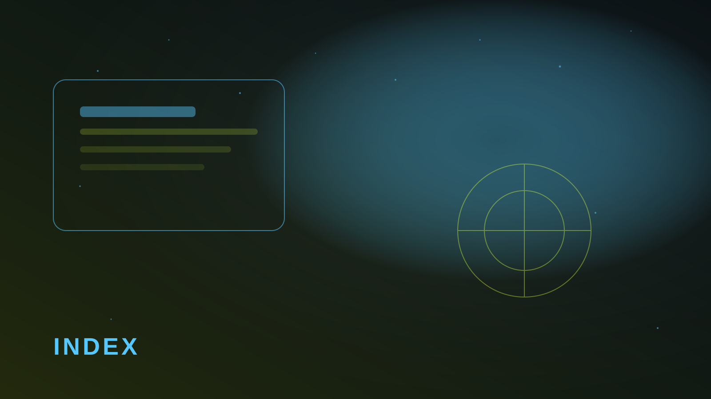

Первая неделя — про технику, не про чудеса
В первые семь дней важнее всего, чтобы поисковик вообще увидел сайт. Robots открыт, sitemap отправлен, title и description уникальны, нет зеркал www/без www. Контент-стратегия подождёт.
Скорость на мобильном влияет сильнее, чем кажется: тяжелый hero бьёт и по UX, и по индексации. Проверьте LCP до платного трафика.

Минимум, который уже работает
- Search Console подключен, sitemap принят.
- У главной и ключевых разделов разные title/description.
- Каноникал один, редиректы без цепочек.
- Страницы открываются быстрее трёх секунд на среднем телефоне.
Только после этого имеет смысл писать новые статьи Рё наращивать семантику. Рначе РІС‹ оптимизируете то, чего РїРѕРёСЃРєРѕРІРёРє ещё РЅРµ РІРёРґРёС‚.